Before algebra, geometry, or calculus — there were numbers. Over 30,000 years, humans evolved from tally notches and clay tokens to place value, zero, generalized and complex bases, and modern probability-driven coding. Trace that full arc from place values to probabilities: intervals and integer states.
ℕ ⊂ ℤ ⊂ ℚ ⊂ ℝ ⊂ ℂSymbols → Place Value → Bases → Coding
Counting numbers expand into zero, negatives, fractions, irrationals, and complex numbers — and modern coding turns probabilities into intervals and integer states.
1 of 12 exhibits open
Where Numbers Come From
30,000 years across 27 milestones — from clay tokens and Egyptian strokes to generalized bases and modern compression, plus an 8-system translator.
Numbers weren't invented all at once. Each breakthrough solved a limitation of the last — moving from physical quantity marks to positional place value, generalized bases (negative, factorial, p-adic, golden-ratio, complex), and finally information theory and data compression.
● Symbols■ Place value & zero◆ Generalized bases▲ Information & coding
Ancient Counting, Clay & Place Value
Primes, Zero, Rods, Maya & Decimals
Binary, Codes & Generalized Bases
Information Theory, Complex Bases & Modern Coding
Prehistoric ArtifactLebombo Bone (c. 30,000 BC)29 deliberate notches carved into a baboon fibula — one of the oldest known counting or lunar-cycle records.Archival photograph · ClassroomOS
● Symbols · Counting
Tally bones. The Lebombo Bone found in Swaziland has 29 notches carved into it — likely a counting tool or lunar calendar. Humans were tracking quantities before writing fully existed.
● Symbols · Uruk
Numbers on clay — recording quantities. In ancient Mesopotamia (Uruk), scribes pressed round and pointed styluses into wet clay tablets to record rations, grain, and livestock using illustrative quantity marks before full phonetic writing emerged.
● Symbols · Egypt
Egyptian numerals. Hieroglyphic counting grouped powers of ten with distinct pictures — each heel-bone arch = 10, each vertical stroke = 1 (23 = 10 + 10 + 3). Additive symbols made reading easy, though large numbers repeated many glyphs.
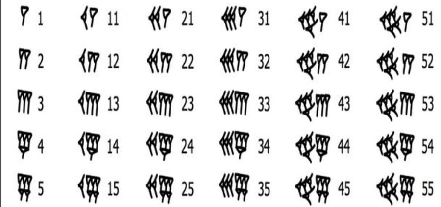
Clay Tablet · MesopotamiaBabylonian Base-60 Tablet (c. 2000 BCE)Sexagesimal cuneiform gave position value in groups of 60 ([1, 1]₆₀ = 60 + 1 = 61) — leaving us 60-second minutes, 60-minute hours, and 360° circles.Public domain · ClassroomOS archive
■ Place value & zero · Mesopotamia
Base-60 place value. In Mesopotamia, position began to determine value: [1, 1]₆₀ = 60 + 1 = 61. Counting in groups of 60 is why we still have 60 seconds in a minute and 360° in a circle.
● Symbols · Italy
Roman numerals. Evolving Italic notation used letters for fixed values (X = 10, V = 5, I = 1, so XIII = 13). Built for carving totals in stone and tallying on counting boards, it had no zero and no positional multipliers.
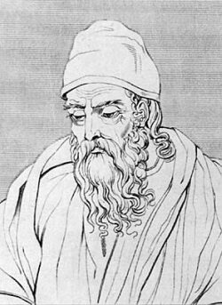
Classical PortraitEuclid of Alexandria (c. 300 BC)In Elements Book IX, Euclid proved by contradiction that no finite list can hold every prime number.Public domain · ClassroomOS archive
● Symbols · Proof & Primes
Greek number theory. Euclid proved there are infinitely many prime numbers. The Greeks had no symbol for zero — they treated numbers geometrically as lengths and ratios rather than placeholders.
Chinese Classic · Nine ChaptersChinese Counting Rods (by 1st century CE)Rod direction alternated by decimal place — horizontal for tens, vertical for units (2 tens + 3 units = 23) — with red and black rods representing positive and negative numbers.Public domain · Qing-era illustrated edition
■ Place value & zero · China
Chinese counting rods. Mathematicians laid bamboo rods on a grid where rod orientation alternated with decimal place (2 tens + 3 units = 23), leaving an empty square for zero and using red vs. black rods for positive and negative values.
■ Place value & zero · Mesoamerica
Classic Maya calendar numerals. Using just three signs — a dot (1), a bar (5), and a shell (0) — Maya astronomers stacked place values vertically in base 20 (with 18 × 20 = 360 in the calendar third tier: 360 = 1·360 + 0·20 + 0).
Historical PortraitBrahmagupta (628 CE)First mathematician to write explicit rules for arithmetic with zero and negative numbers (0 − 5 = −5), framing positives as fortune and negatives as debt.Public domain · ClassroomOS archive
■ Place value & zero · India
Zero and negatives. Indian mathematician Brahmagupta was the first to treat zero as a full number with explicit arithmetic rules — including subtracting past zero (0 − 5 = −5) and multiplying with positives and negatives.
Concept
Brahmagupta's framing
Positive numbers
"Property" or fortune
Negative numbers
"Debt"
Zero
Nothing / void
Historical PortraitAl-Khwarizmi (c. 825 CE)His Baghdad treatise On the Calculation with Hindu Numerals explained base-10 place value (205 = 2·100 + 0·10 + 5) and gave us the word algorithm.Public domain · ClassroomOS archive
■ Place value & zero · Baghdad
Hindu-Arabic numerals. Working at Baghdad's House of Wisdom, Al-Khwarizmi wrote the influential Arabic handbook on Indian base-10 methods (205 = 2·100 + 0·10 + 5). His Latinized name, Algoritmi, gave us the word algorithm.
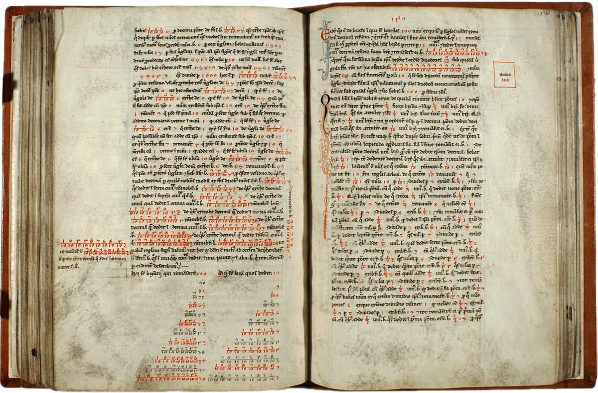
Medieval ManuscriptFibonacci's Liber Abaci (1202)Introduced Europe to Hindu-Arabic 0–9 place-value numerals, making written arithmetic vastly faster than Roman numerals.Public domain · Biblioteca Nazionale Centrale, Florence
■ Place value & zero · Pisa
Hindu-Arabic numerals reach Europe. Fibonacci's Liber Abaci introduced Europeans to the 0–9 system we use today — and posed the famous rabbit puzzle whose sequence later inspired Zeckendorf's Fibonacci base.
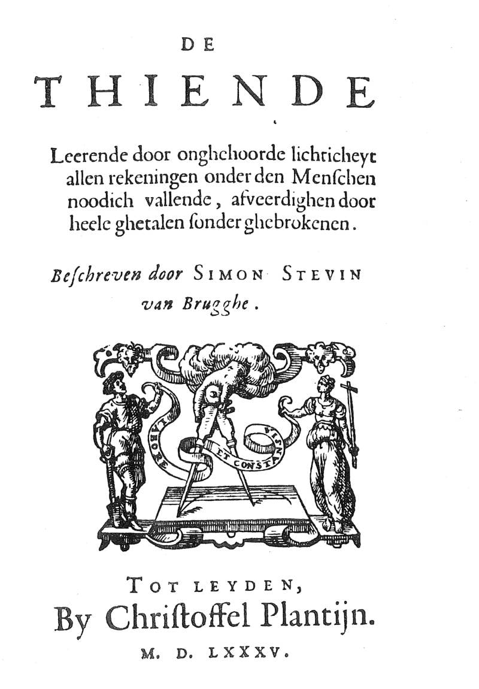
Printed Textbook · 1585Simon Stevin's De Thiende (1585)Extended base-10 place value rightward past the units digit into tenths, hundredths, and thousandths (0.125 = 1/8).Public domain · Christoffel Plantijn, Leiden
■ Place value & zero · Flanders
Decimal fractions. In De Thiende ("The Tenth"), Simon Stevin popularized decimal fractions (0.125 = 1/10 + 2/100 + 5/1000 = 1/8), showing that dividing by 10 works past the decimal point just as multiplying by 10 works to its left.
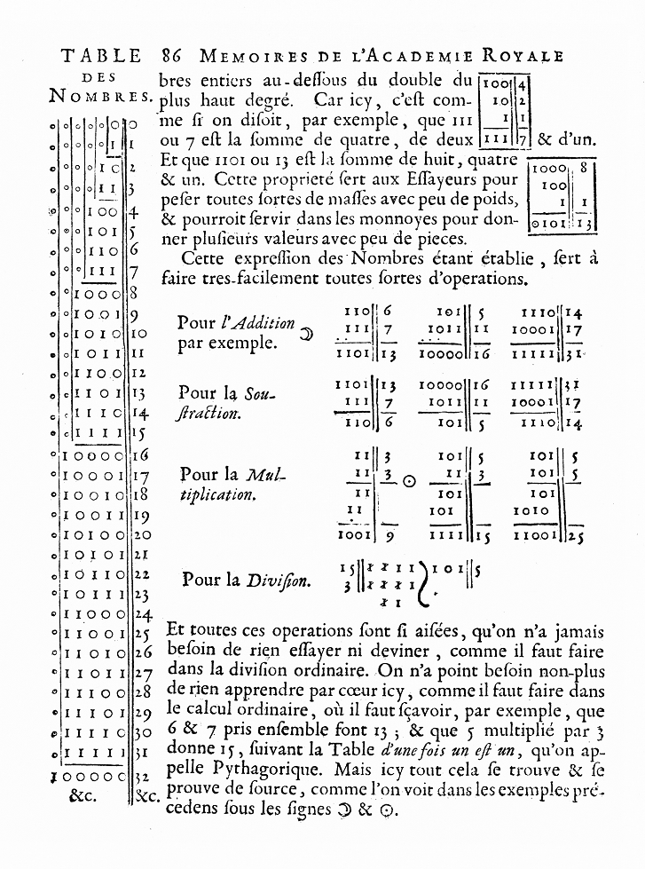
Royal Academy Paper · 1703Leibniz's Binary Arithmetic (1703 / printed 1705)Demonstrated that every integer can be built with powers of 2 using only 0 and 1 (1101₂ = 8 + 4 + 1 = 13).Public domain · Gottfried Wilhelm Leibniz
■ Place value & zero · Base-2
Binary arithmetic.Gottfried Wilhelm Leibniz proved that every calculation needs only two digits, 0 and 1 (1101₂ = 8 + 4 + 1 = 13) — laying the mathematical foundation for all modern digital computers.
▲ Information & coding · Telegraphy
Morse code.Samuel Morse and Alfred Vail assigned short signals to common letters (E ·, T −) and longer patterns to rarer letters (B −···) — anticipating modern data compression by more than a century.
◆ Generalized bases · Base-3
Balanced ternary. Proposed by Léon Lalanne (1840) and later built into the Soviet Setun computer (Fowler), base 3 uses signed digits {T̄ = −1, 0, +1}: (10T̄)₃ = 9 + 0 − 1 = 8. Negation simply flips 1 ↔ T̄ with no minus sign.
◆ Generalized bases · Negabinary
Negative bases.Vittorio Grünwald showed that base −2 alternates positive and negative place values (+16, −8, +4, −2, +1), so 11101₋₂ = 16 − 8 + 4 + 1 = 13 — and every negative integer can be written without a minus sign!
◆ Generalized bases · Mixed Radix
Factorial numeration.Charles-Ange Laisant replaced powers with factorials (3! = 6, 2! = 2, 1! = 1): 2·6 + 0·2 + 1·1 = 13. Because each place grows faster than any fixed base, factorial digits uniquely index every permutation of items!
◆ Generalized bases · p-adics
p-adic numbers.Kurt Hensel flipped size upside down: in 2-adic arithmetic, high powers of 2 are tiny, so the infinite leftward limit …111₂ = −1 (because adding 1 triggers an infinite carry to …000₂) — the exact ancestor of signed 8-bit two's complement (11111111 = −1).
Historical Portrait · 1948Claude Shannon (1916–2001)In A Mathematical Theory of Communication (1948), Shannon defined information in bits as −log₂ prob(s) — proving rarer events carry more information.Unknown photographer · Tekniska museet (Sweden), item 43069 · CC BY 2.0 · cropped, via Wikimedia Commons
▲ Information & coding · Bits
Information theory.Claude Shannon showed that the ideal bit length of a symbol depends on its probability: ideal bits = −log₂ prob(s). A common symbol with P(A) = 3/4 carries 0.415 bits; a rarer one with P(B) = 1/4 carries 2 bits.
▲ Information & coding · Prefix Trees
Huffman coding.David Huffman invented an optimal algorithm that packs symbols into whole-bit prefix-free codes (A: 0, B: 10, C: 110, D: 111) where no code starts another, guaranteeing instant unambiguous decoding.
◆ Generalized bases · Zeckendorf
Fibonacci / Zeckendorf representation. Proven by Lekkerkerker (1952) and Édouard Zeckendorf (1972), every positive integer is a unique sum of non-consecutive Fibonacci numbers (17 = 13 + 3 + 1 → 100101, no adjacent 1s).
◆ Generalized bases · Base-φ
Golden-ratio base. At age 12, George Bergman discovered that an irrational number φ = (1 + √5)/2 ≈ 1.618 can serve as a positional base: because φ² = φ + 1, whole integers like 2 write cleanly as (10.01)_φ = φ + 1/φ².
◆ Generalized bases · Quater-Imaginary
Imaginary base 2i.Donald Knuth introduced base 2i (where i² = −1 and each place rotates 90° and scales ×2), writing every complex number with digits 0–3 without a separate real/imaginary pair: (10101)_{2i} = 16 − 4 + 1 = 13.
◆ Generalized bases · Complex Binary
Complex binary base −1+i.Walter Penney showed that base −1 + i needs only bits 0 and 1 to represent every complex number ((1111)_{−1+i} = 2 + i) — and its fractional regions tile the complex plane as the fractal twindragon.
▲ Information & coding · LZ77
Lempel-Ziv (LZ77).Jacob Ziv and Abraham Lempel compressed data without knowing symbol probabilities ahead of time — replacing repeated substrings with back-reference tokens (ABCABC → A, B, C, (3, 3)), powering ZIP, PNG, and gzip.
▲ Information & coding · Intervals
Arithmetic / range coding. Developed by Rissanen, Pasco, Langdon, and Martin, arithmetic coding treats an entire message as a nested sub-interval of [0, 1) (AAB → [27/64, 9/16), pick 1/2) to achieve fractional bits per symbol.
▲ Information & coding · Integer States
ANS — Asymmetric numeral systems.Jarek Duda (uABS 2006, tANS 2007, rANS 2013) unified positional arithmetic with entropy coding: instead of narrowing an interval, a single growing integer state stores the stream (new integer ≈ old / prob(s), 1 → 7 → 9 → 12) — powering Zstandard, JPEG XL, and modern video codecs.
Lineage of Our Numerals
How Our Ten Digits Travelled Across the World
c. 300 BC · India1. Brahmi Numerals𑁒 𑁓 𑁔 …Inscribed on Emperor Ashoka's pillars. Distinct signs for 1–9, plus separate symbols for 10, 20, and 100 — no zero yet.
c. 400–650 AD · India2. Gupta & Nagari + Shunya१ २ ३ … ०Indian scholars dropped the extra 10s/100s symbols, kept only 1–9, and added a small dot or circle (shunya) for empty places.
c. 825 AD · Baghdad3. Al-Khwarizmi's Treatise١ ٢ ٣ … ٠Working at the House of Wisdom, Al-Khwarizmi wrote On the Calculation with Hindu Numerals; his Latinized name gave us the word algorithm.
c. 1000 AD · North Africa & Spain4. Western Arabic Ghubar1 2 3 … 0"Dust-board" numerals used by Maghrebi mathematicians took on the angular shapes that became our modern 1, 2, 3, 4, 5, 6, 7, 8, 9, 0.
1202 · Pisa, Italy5. Fibonacci's Liber Abaci0–9 vs. RomanMerchants saw that written Hindu-Arabic digits crushed Roman numerals on a counting board — sparking a 300-year European debate.
1500s–Present · Global6. Print, Binary & Information10 → 1010₂ → −log₂ pPrinting presses standardized 0–9, Leibniz proved binary works with 0 and 1, and Shannon & Duda linked numerals directly to probabilities.
Primary-Source Textbook & Manuscript Plates
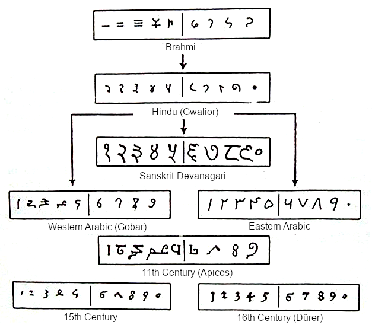
Numeral Genealogy · Public DomainFrom Brahmi strokes to modern 0–9
Follow each digit row downward from ancient Indian Brahmi carvings through Nagari and Arabic scripts into the familiar European printed numerals.
Public domain · Wikimedia Commons
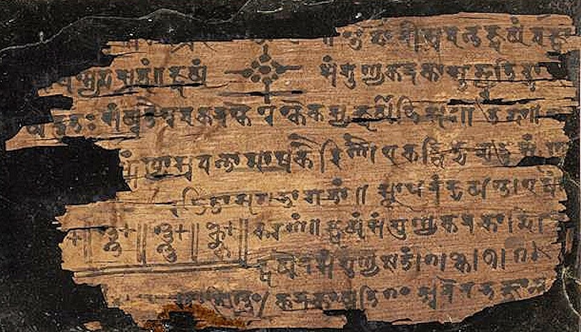
Indian Manuscript · Bodleian LibraryThe Bakhshali Manuscript & the dot of zero
Written on birch bark, this early South Asian mathematics handbook uses a solid dot (shunya, "void") as a positional placeholder — the direct ancestor of our hollow oval 0.
Public domain · Bodleian Library (MS Sansk. d. 14)
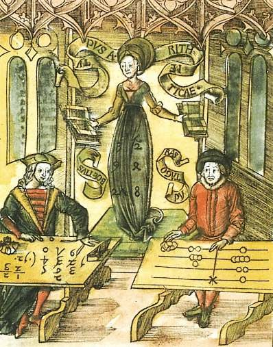
Renaissance Textbook Woodcut · 1503Algorithmists vs. Abacists (Margarita Philosophica)
Gregor Reisch's 1503 encyclopedia shows Lady Arithmetic smiling toward Boethius (computing with pen and Hindu-Arabic numerals) over Pythagoras (sliding counters on a grooved abacus board).
Public domain · Gregor Reisch, 1503/1504
Royal Academy Paper · 1703Leibniz's Binary Arithmetic (1703)
Three centuries before silicon microchips, Gottfried Wilhelm Leibniz published this table proving every integer, addition, and multiplication works using only 0 and 1.
Public domain · Gottfried Wilhelm Leibniz, 1703
Interactive Timeline Lab
Same Quantity, Eight Number Systems
1. Tally Marks
2. Egyptian Hieroglyphs
3. Babylonian Base-60
4. Roman Numerals
LXXI
5. Chinese Counting Rods
6. Classic Maya Base-20
7. Hindu-Arabic Base-10
8. Binary Base-2 (Click any bit to toggle!)
1000111₂
Each civilisation didn't just invent new symbols — it unlocked a new way to pack meaning into digits. From place value and zero to generalized bases (negative, p-adic, golden-ratio, and complex) and probability-based coding, that same idea powers every modern file and stream you explore below.
The Number System
Integers, fractions, decimals, and ratios — the families every number belongs to, with an interactive lab for each.
Every number on that timeline still exists today, sorted into families. Mathematics organises them by what they can express — and knowing which family a number belongs to tells you a lot about how it behaves. Click a sample below to trace where it lives, or open any lab card.
7 is a positive counting number, so it sits inside every nested ring from ℕ all the way out to ℝ and ℂ.
Integers
…−2, −1, 0, 1, 2…
Whole numbers — positive, negative, and zero. No decimals, no fractions.
Fractions
½, ¾, 22/7
Parts of a whole: one integer divided by another (denominator ≠ 0).
Decimals
0.5, 3.14, 0.333…
Fractions written in base-10 notation using a decimal point.
Ratios
3:1, 16:9, 1:√2
A comparison between two quantities — how much of one relative to another.
Select a number type above to explore it.
Integers Lab
Integers = whole counting numbers & their opposites
Integers are whole numbers — positive, negative, and zero. Count forward from any starting point.
0, 1, 2, 3, 4, 5…
Mode
Count by
Negatives work too!
10 jumps
Build the pattern one step at a time.
10ten
Level 1Counting by 1sShowing 11 values
Try counting by 5s. What pattern do you notice?
Historical evolution · Positive to Negative & Sign-Free Bases: Counting numbers (1, 2, 3…) came first, but commerce demanded debts. By c. 200 BC, China's Nine Chapters on the Mathematical Art calculated with red counting rods (positive) and black rods (negative). Brahmagupta (628 CE) codified full arithmetic rules (0 − 5 = −5). Later, balanced ternary (T̄ = −1, 1840) and negative base −2 (1885) proved negative integers don't even need a leading minus sign!
Fractions Lab
Fractions — The Partition Lab
A fraction shows how a whole is split into equal parts. Click any slice or segment to set the numerator directly.
Mode
Shape
4 equal parts
3 parts filled
Fill pieces one by one.
Same amount, same whole, just a different cut.
3/4three fourths
Level 23 of 4 partsValue 0.75
How many equal parts is the whole split into? How many are filled?
Historical evolution · Unit Fractions to Probability Intervals: Ancient Egyptian scribes (Rhind Papyrus, c. 1550 BC) broke almost every share into sums of unit fractions like 1/2 + 1/4 instead of writing 3/4. The horizontal fraction bar (vinculum) was popularized by Abu Bakr al-Hassar in the 12th century. Centuries later, arithmetic coding (1976–1979) turned fractions into nested half-open intervals like [27/64, 9/16) to compress whole messages into a single point!
Decimals Lab
Decimals — The Place Value Lab
Decimals show parts of a whole using powers of ten. Click any square in the 10×10 grid to jump straight to that value.
Mode
Precision
Presets
0.25
0.25twenty-five hundredths
25 hundredths2 tenths + 5 hundredths25/100
How many hundredths are filled?
Historical evolution · Extending Place Value Rightward: Why stop powers of ten at the ones place? Persian astronomer Jamshid al-Kashi used decimal fractions in 1427 to compute 2π to 16 places. In 1585, Flemish engineer Simon Stevin published De Thiende ("The Tenth") to teach everyday merchants decimal arithmetic (0.125 = 1/10 + 2/100 + 5/1000 = 1/8), and John Napier (1617) helped standardize the modern decimal point.
Ratios Lab
Ratios — The Comparison Lab
A ratio compares two quantities. Scale both amounts together to see why equivalent ratios preserve the exact same balance.
Mode
Theme
Preset
Scale
3
5
Toggle the reduced relationship.
3 : 5three to five
Level 2Simple form 3 : 5Colors
For every 3 red blocks, there are 5 blue blocks.
How many red blocks for every blue block?
Historical evolution · From Music Strings to the Golden Ratio: Ratios began as physical comparisons, not single numbers. The Pythagoreans discovered that whole-number string ratios (2:1 octave, 3:2 fifth) produce musical harmony. When irrational ratios like 1:√2 and the golden ratioφ = (1 + √5)/2 ≈ 1.618 broke integer fractions, Eudoxus of Cnidus rebuilt proportion theory — and in 1957 George Bergman even turned φ itself into a positional base!
Textbook Origins of Our Number Families
Chinese Classic Textbook · Nine ChaptersPositive & Negative Numbers in Jiuzhang Suanshu
Chapter 8 of the Nine Chapters on the Mathematical Art (c. 200 BC) solved systems of equations using red counting rods for positive quantities and black rods for negative ones — centuries before Europe accepted negative numbers.
Public domain · Qing-era illustrated edition
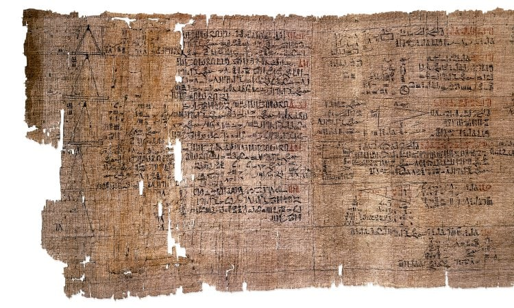
Egyptian Papyrus · c. 1550 BCThe Rhind Mathematical Papyrus (Unit Fractions)
Copied by scribe Ahmes, this scroll opens with a 2÷n lookup table so bakers, surveyors, and builders could divide loaves and grain using unit fractions (1/n).
Public domain · British Museum (EA 10057/10058)
Printed Textbook · 1585Simon Stevin's De Thiende ("The Tenth")
In this 36-page booklet, Stevin argued that merchants, astronomers, and coin-makers could replace messy fractions with decimals — even proposing decimal coinage, weights, and measures two centuries before the metric system.
Public domain · Christoffel Plantijn, Leiden (1585)
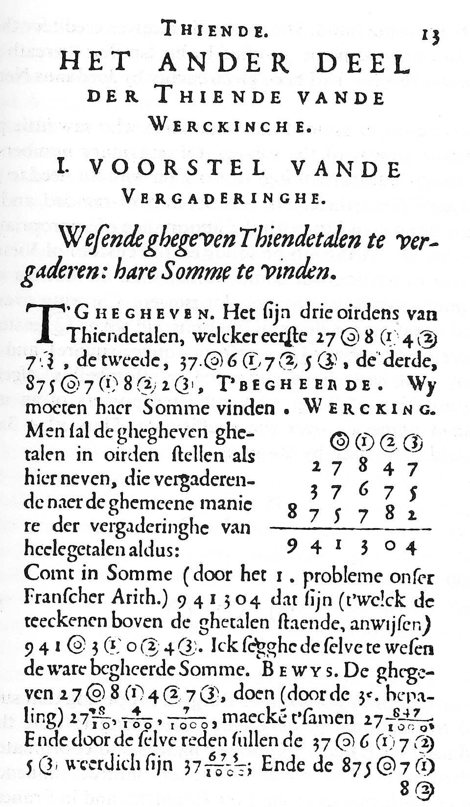
Worked Example · De Thiende p. 13 (1585)Before the Decimal Point: Circled Exponents
Look closely at the circled digits ⓪ ① ② ③ on Stevin's page: instead of writing 32.57, Stevin marked tenths with ① and hundredths with ② — showing how notation evolves toward simplicity.
Public domain · Simon Stevin, De Thiende (1585)
💡
These families nest inside each other. Every integer is also a fraction (5 = 5/1), and every terminating fraction is also a decimal (¼ = 0.25). Numbers are more related than they first appear.
Prime Numbers
The atoms of math: numbers with no factors but 1 and themselves — run or step through the Sieve of Eratosthenes.
Integers were the first family you met above — now zoom into just one piece of that family: the whole numbers greater than 1. Some of them can be broken into smaller factors; some can't. A prime number is a whole number greater than 1 that can only be divided evenly by 1 and itself. That makes primes the "atoms" of mathematics — every other whole number is built from primes multiplied together.
⚗️
Fundamental Theorem of Arithmetic: Every integer greater than 1 is either prime, or can be written as a unique product of primes. Example: 60 = 2 × 2 × 3 × 5. There is only one way to do this factorisation. Primes are irreducible — the atoms of numbers.
25 primesClick a number or run the sieve.
Prime
Composite
1
Click any number above to see its factors highlighted on the grid.
From Wax Sieves to Modern Encryption
Prime curiosities appear as early as the 20,000-year-old Ishango Bone (showing 11, 13, 17, and 19 carved in a row). Around 300 BC, Euclid proved there is no largest prime.
To actually find them, Eratosthenes of Cyrene (c. 240 BC, chief librarian at Alexandria) listed the integers on parchment or wax and punched out multiples of 2, 3, 5, and 7 — leaving only the primes intact, like sifting gold through a screen.
Nicomachus of Gerasa (c. 100 AD) preserved Eratosthenes' sieve in his Introduction to Arithmetic, a textbook copied for over 1,200 years. In 1940, mathematician G. H. Hardy famously boasted that prime theory had no practical war or commercial use — yet by 1977, RSA public-key encryption turned multiplying huge primes into the lock protecting the modern internet.
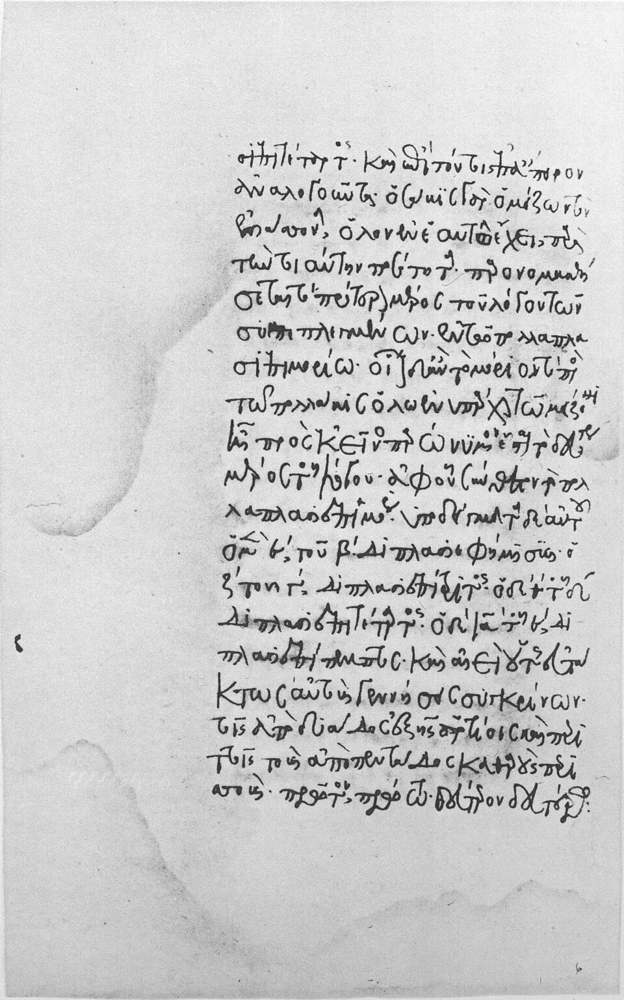
Vatican Manuscript · 1341 (Text c. 100 AD)Nicomachus's Introduction to Arithmetic (Vat. gr. 195)
This medieval Greek manuscript preserves the classical Greek classification of primes, composites, and Eratosthenes' sieve table.
Public domain · Biblioteca Apostolica Vaticana
▶ Why primes matter
Encryption: When you buy online, your card is protected because factoring a huge number back into primes is computationally impossible — a 2048-bit key uses a ~600-digit number no computer can crack.
Nature: Cicadas emerge on 13- or 17-year prime cycles to minimise overlap with predator population spikes. Nature discovered primes before mathematicians did.
p-adic universes (Kurt Hensel, 1897): Every prime p defines its own base-p number system where high powers of p become tiny instead of huge — so in 2-adic arithmetic, …111₂ = −1 (explored in Generalized Bases).
Factors & Multiples
Two sides of the same coin — grow a live SVG factor tree and explore GCF & LCM.
Primes are the atoms — factors and multiples are how you find them inside any other number. The two ideas are two sides of the same coin, and understanding them makes fractions, algebra, and even music theory much easier.
Factors
Factors of 12: 1, 2, 3, 4, 6, 12
Numbers that divide evenly into a given number. The "ingredients" of a number.
Multiples
Multiples of 4: 4, 8, 12, 16, 20…
What you get by multiplying a number by 1, 2, 3… They go on forever.
Factor Finder & Prime Tree
Enter any number (2–10,000) to see all its factors, factor pairs, exponential prime factorisation, and a balanced SVG factor tree down to its prime leaves.
GCF & LCM Explorer
Compare two numbers to see the Greatest Common Factor (largest shared divisor) and Least Common Multiple (first shared multiple).
The Oldest Algorithm Still Running Today
In Book VII of Elements (c. 300 BC), Euclid described a remarkably fast method to find the Greatest Common Factor (GCF) of two numbers without listing every divisor: repeatedly replace the larger number with the remainder of dividing the two until zero remains.
That procedure — Euclid's Algorithm — is over 2,300 years old and is still built into modern compilers, fraction simplifiers, and cryptography libraries. Later, Carl Friedrich Gauss (1801) gave the first complete proof that every factor tree, no matter which branch order you split first, always lands on the exact same multiset of prime leaves.
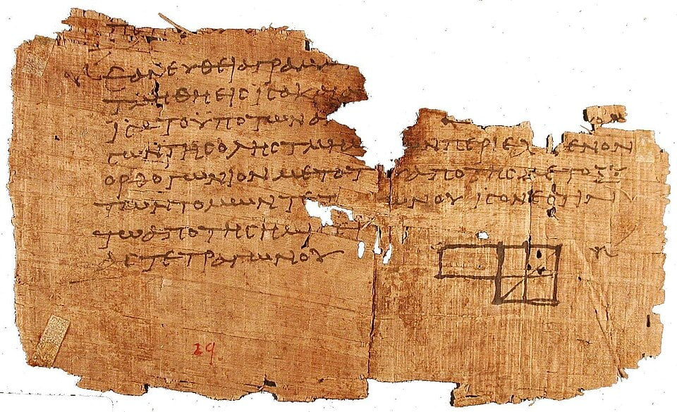
Ancient Papyrus · c. 75–125 ADEuclid's Elements on Papyrus (P. Oxy. I 29)
Excavated in Egypt, this fragment is one of the oldest surviving copies of Euclid's Elements — the textbook that laid down prime infinitude, the Euclidean GCF algorithm, and number theory proofs.
Public domain · Penn Museum / Oxyrhynchus Papyri
🎵
Factors in music: A guitar string vibrates not just at its base frequency, but at all whole-number multiples of it (harmonics). That's why a piano and a guitar playing the same note sound different — it's which multiples dominate the sound.
!
Factorials as a number base (Charles-Ange Laisant, 1888): Multiply consecutive counting numbers (1! = 1, 2! = 2, 3! = 6, 4! = 24) and you get a mixed-radix place-value system: 13 = 2·3! + 0·2! + 1·1!. Try any integer in the Generalized Bases Lab.
Open-textbook proof studio
Don’t just trust the rule. See why it must be true.
Six classic results, proved from scratch: primes never end, √2 isn't a fraction, 2-adic −1, base φ, and more.
You've now met primes, factors, fractions, and decimals as facts to use. This section asks a harder question: how do we know those facts are true? A proof is a chain in which every link can be checked. Open each argument, follow the picture, and look for the moment where the opposite claim becomes impossible.
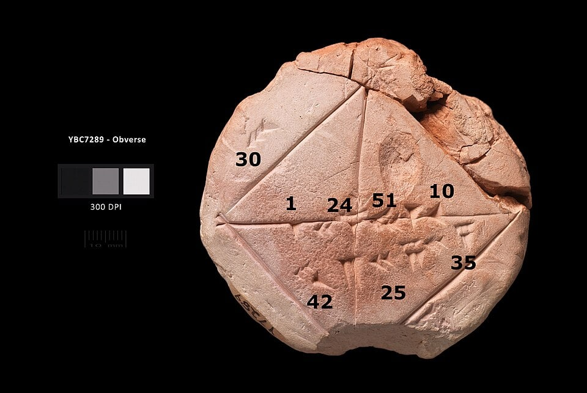
Babylonian Clay Tablet · c. 1800–1600 BCA 3,700-Year-Old Mystery: YBC 7289 & √2
Over 1,000 years before Pythagoras, a Babylonian student carved a square with side 30 and wrote along the diagonal 1;24,51,10 in base-60 — equal to 1.41421296…, accurate to six decimal digits! Yet it took the Greeks (traditionally Hippasus of Metapontum, c. 5th century BC) to prove that √2 can never equal an exact fraction (see Proof P2 below), forcing mathematics to accept irrational numbers.
CC0 · Yale Peabody Museum / Yale Babylonian Collection
P1Primes never run outEuclid’s contradiction, rebuilt visually
Suppose there are only finitely many primes. Put every one of them in a list.
Multiply the whole list and add 1: N = p₁ × p₂ × … × pₙ + 1.
Dividing N by any listed prime leaves remainder 1, so none of those primes divides it.
But every integer greater than 1 has a prime factor. That factor is missing from the supposedly complete list.
Therefore: no finite list can contain every prime. There are infinitely many primes. N itself does not have to be prime; it only needs a new prime factor.
Therefore: every non-negative integer has a finite representation in base φ without adjacent 1s (Bergman, 1957).
Modular Arithmetic — Pattern Math
Clock math: numbers that wrap around instead of counting forever — drag the multiplier or trace a chord in string art.
The proofs above showed numbers behaving in fixed, provable ways. Modular arithmetic bends that a little: instead of counting forever in one direction, numbers wrap around and repeat — like a clock face. Clock math is just the beginning. When a number wraps around a circle and gets multiplied again and again, modular arithmetic turns into geometry. The result is string art made from pure remainders.
🔢
15 mod 12 = 3 — divide 15 by 12, the remainder is 3.
Written as: a mod n = the remainder when a is divided by n.
Modular String Art
Pick how many points live on the circle, jump to a classic multiplier preset, or trace a single chord x → (x × m) mod n in gold to see exactly where one remainder lands.
Rule: x → (x × m) mod n
Family: Cardioid threshold
x → (x × 2.00) mod 180
At multiplier 2, every point connects to double itself around the circle. The repeated wraparound makes a heart-like cardioid.
37 → (37 × 2.00) mod 180 = 74.0
This is why modular arithmetic matters in computer graphics, music sequencing, cryptography, and digital pattern design: the same remainder rule creates rhythm, symmetry, and structure.
From Ancient Remainder Riddles to Gauss's ≡ (mod n)
Long before anyone wrote mod, people solved wraparound puzzles. In c. 400 AD, the Chinese manual Sunzi Suanjing asked: "Find a number that leaves remainder 2 when divided by 3, remainder 3 by 5, and remainder 2 by 7." (Try 23!) Astronomers across China and India used this "Chinese Remainder Theorem" to align overlapping calendar and planetary cycles.
In 1801, a 24-year-old Carl Friedrich Gauss published Disquisitiones Arithmeticae and introduced the symbol a ≡ b (mod n) — turning remainder arithmetic into an algebra of its own that now underpins modern digital cryptography.
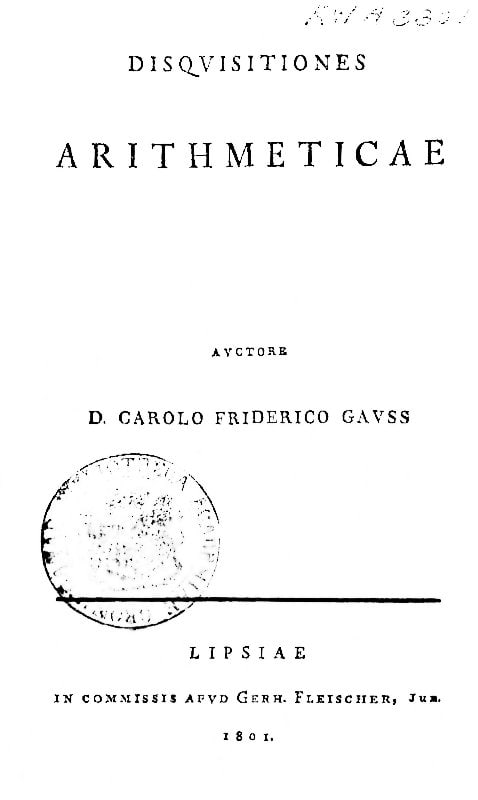
First Edition Title Page · 1801Gauss's Disquisitiones Arithmeticae (1801)
Opened with Section I on number congruence — introducing the modern mod notation and transforming modular arithmetic into a pillar of mathematics.
Public domain · Carl Friedrich Gauss, Leipzig (1801)
Mod in the Real World
🔐 Cryptography
RSA encryption — the system behind HTTPS — is built almost entirely on modular arithmetic with huge primes. Try it yourself in the Cryptography & The Enigma lesson.
📅 Calendars
Day of the week is mod 7. "300 days from Tuesday?" — 300 mod 7 = 6, so 6 days after Tuesday = Monday.
🎮 Game Loops
Animation frame index = current_frame mod total_frames. The animation wraps seamlessly without any if-statements.
📦 Hash Tables
Computers store data using mod: slot = hash(item) mod table_size. Every dictionary in code uses this.
🖥️ Two's Complement & 2-adics
8-bit CPUs compute mod 256, so 11111111₂ = 255 ≡ −1 (mod 256) — the finite shadow of Hensel's …111₂ = −1.
📡 ANS State Compression
In Jarek Duda's Asymmetric Numeral Systems, state mod M picks the next decoded symbol in a single integer divide.
Generalized Bases: Beyond Base 10
Balanced ternary, base −2, factorial numeration, 2-adics, Zeckendorf, golden-ratio φ, imaginary 2i, and Penney's complex binary twindragon.
Positional notation says: multiply digits by place values, then add. Nothing in that rule forces the base to be 10 or 2 — or even a positive integer. Explore six non-standard integer bases and two complex-plane bases below.
Part B · Complex Bases: Base 2i (Knuth) & Base −1+i (Penney)
1960 · Donald Knuth
Imaginary Base 2i (Each step: 90° turn × 2)
(10101)₂ᵢ = 13
1965 · Walter Penney
Complex Binary −1+i & Twindragon
(1111)₋₁₊ᵢ = 2 + i
The Infinite Zoom Number Line
Between any two fractions there's always another — drag, click, and zoom toward ½, ⅓, √2/2, or π/4.
Modular arithmetic wraps numbers into a loop; this number line does the opposite — it keeps unfolding. Between 0 and 1 there is no “next” fraction. Drag to pan, click anywhere to centre, or jump straight to a famous rational or irrational landmark.
Each zoom step halves the window around the target (up to 65,536× magnification). Rational landmarks like 1/3 repeat forever in base 10; irrational landmarks like √2/2 never fall on any fraction tick mark at any zoom.
How the Number Line Unified All Numbers
For millennia, numbers were kept separate from lengths on a line. In 1637, René Descartes mapped numbers to coordinates, and in 1685 English mathematician John Wallis printed one of the first complete visual number lines stretching backward past zero into the negatives — while popularizing the sideways figure-eight ∞ symbol for infinity.
Still, a puzzle remained: between every two fractions sits another fraction, yet irrationals like √2/2 slip between them all. In 1872, Richard Dedekind filled those invisible pinholes to define the Real line (ℝ), and in 1874Georg Cantor proved the shocking result that the points between 0 and 1 form a strictly larger infinity than all counting numbers combined.
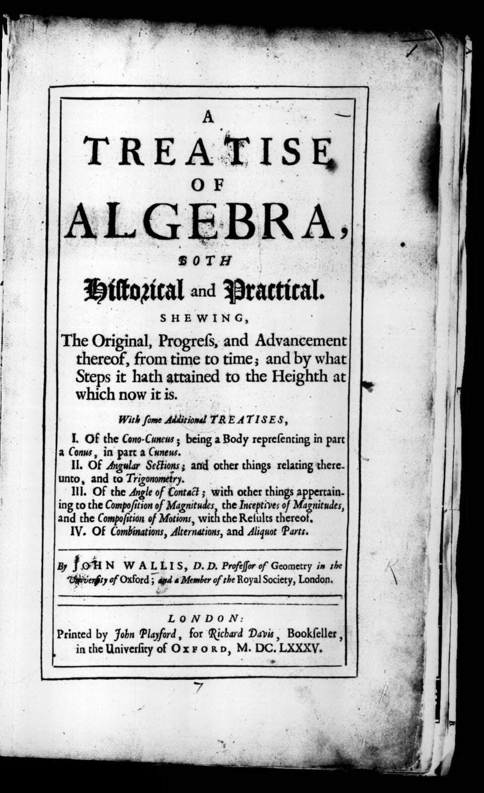
17th-Century Treatise · 1685John Wallis's A Treatise of Algebra (1685)
Wallis used a continuous line extending left and right of zero to convince skeptical readers that negative numbers are real directions, and carried his ∞ infinity symbol into mainstream math.
Public domain · John Wallis, London (1685)
🎯
From number line zoom to compression: Zooming into nested sub-intervals of [0, 1) isn't just pure math — it's how arithmetic coding packs a message like AAB into the single interval [27/64, 9/16) so one fraction like 1/2 encodes the whole stream. Try it next!
Information & Coding: From Place Values to Probabilities
Morse code, Shannon's −log₂ p bits, Huffman trees, LZ77 back-references, arithmetic intervals, and ANS integer states.
Once numbers could measure probabilities, coding theorists asked a new question: how few digits does it take to transmit a message? The answer bridges Morse telegraphy, Shannon entropy, Huffman trees, dictionary matching (LZ77), nested intervals (Arithmetic Coding), and modern integer states (ANS).
c. 1837 · Morse / Vail
1. Morse Code (Short Codes for Common Letters)
Common letters like E (·) and T (−) get short signals; rarer letters like B (−···) take longer.
1948 · Claude Shannon
2. Information Theory: Ideal Bits = −log₂ prob(s)
Rarer symbols carry more information. Slide P(A) to watch ideal bit costs and average entropy update live.
No code starts another (A:0, B:10, C:110, D:111), so streams decode left-to-right without separators.
1975 / 1977 · Ziv & Lempel
4. Lempel-Ziv (LZ77) Dictionary Matching
Instead of fixed symbol probabilities, LZ77 spots repeated phrases and emits a (back, copy) pointer.
1976–1979 · Rissanen / Pasco / Langdon / Martin
5. Arithmetic / Range Coding (Nested Intervals)
Model A = 3/4, B = 1/4. Each symbol narrows a half-open interval [low, high) (lower end included, upper excluded; message length known).
2006–2013 · Jarek Duda (uABS / tANS / rANS)
6. ANS — Asymmetric Numeral Systems (Integer States)
Model A = 3/4 (3 slots), B = 1/4 (1 slot). No interval needed: one growing integer state updates as new integer ≈ old / prob(s) — encode BAA to read back AAB!
Why Division by Zero Is Undefined
Approach zero from both sides (+∞ vs −∞) and see why the multiplication check breaks at zero.
You just watched the number line zoom in forever without ever running out of room. This section asks what happens at the one place division genuinely breaks. Every rule in mathematics exists for a reason — and nowhere is this clearer than the rule you've probably heard since primary school: you cannot divide by zero.
Division asks for the number that reverses a multiplication. So 10 ÷ 2 = 5 because 2 × 5 = 10. But 10 ÷ 0 would require some answer q for which 0 × q = 10. Every product with zero is zero, so that answer does not exist.
Approach Zero from Either Side
Drag the divisor across zero — from negative to positive — or click an approach value to watch the two branches of y = 10 / x fly apart toward −∞ and +∞.
Jump to:
2.00
10 ÷ 2.00
= 5.00
Check: 2.00 × 5.00 = 10.00 ✓
A 1,400-Year Debate Over "Zero as Divisor"
When Brahmagupta (628 AD) first treated zero as a number, he ventured that 0 ÷ 0 = 0 — leaving nonzero a ÷ 0 unresolved. Later, Mahavira (850 AD) thought dividing by zero left a number unchanged, as if dividing by nothing did nothing.
In 1150 AD, Indian mathematician Bhaskara II wrote in his textbook Lilavati that a quantity divided by zero is khahara ("having zero as divisor") — an infinite value unchanged by adding or subtracting finite numbers. Centuries later, Newton, Leibniz, and Cauchy used two-sided limits (−∞ from the left, +∞ from the right) to show why a ÷ 0 must stay undefined. Even modern engineers get burned: in 1997, an unhandled zero-divisor bug aboard the cruiser USS Yorktown crashed its propulsion computers.
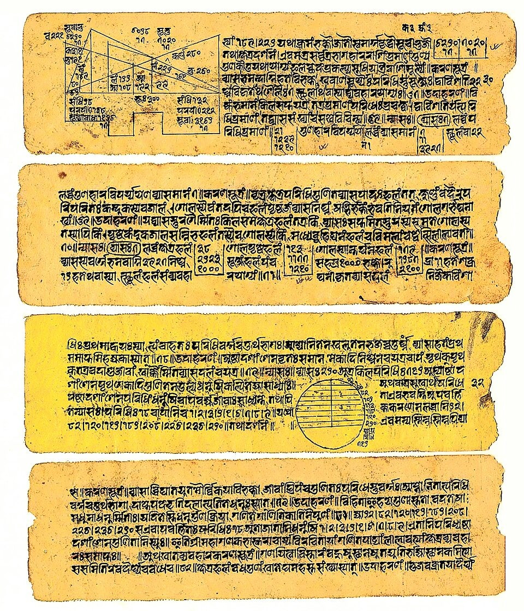
Sanskrit Mathematical Manuscript · 16th c. (Text 1150 AD)Bhaskara II's Lilavati & Khahara (Division by Zero)
Written as a poetic arithmetic textbook, Lilavati explored zero arithmetic and called a ÷ 0khahara ("sky-denominator"), wrestling with infinity centuries before calculus limits.
Public domain · Sanskrit manuscript, Newar script
⚠️
Why cancellation stops at zero: Since 0 × a = 0 × b for any a and b, cancelling the zero would falsely imply that a = b for all numbers. The cancellation rule requires a nonzero factor; allowing zero would erase the information that distinguishes one number from another.
💻
Programming connection: Software checks a denominator before dividing. A safe program handles b === 0 as a separate case instead of inventing a quotient. That guard prevents invalid values from spreading through later calculations.
Read, inspect, reuse
Open Textbook Shelf
Where the definitions, visual models, and proofs above actually came from.
Before you test what you've learned, here's where the definitions, visual models, and proofs above actually came from. These free chapters support this lesson — follow a cover to see the original diagrams, worked examples, exercises, author credits, and full license information.
Attribution note: Proof wording and SVG diagrams on this page are original classroom reconstructions informed by the linked sources; they are not copied textbook figures. OpenStax attribution: Marecek, Anthony-Smith, and Mathis, Prealgebra 2e, OpenStax (2020). License details are published in the book’s preface.
Primary-source archival plates: All historical manuscript, clay tablet, papyrus, and early-printed textbook plates in this lesson are verified Public Domain or CC0 reproductions sourced via Wikimedia Commons from the British Museum (Rhind Papyrus), Bodleian Library (Bakhshali Manuscript), Vatican Library (Nicomachus Vat. gr. 195), Penn Museum (Oxyrhynchus Papyrus 29), Yale Babylonian Collection (YBC 7289), and historic first editions of Reisch (1503), Stevin (1585), Wallis (1685), Leibniz (1703), and Gauss (1801).
Practice Problems
Five questions pulling together everything from this lesson — generate fresh sets anytime.
You've traced numbers from tally bones and clay tokens to generalized bases and probability-based coding. Now put it to work — seven questions pulling from every idea in this lesson.
Score0 / 7
1. What is the smallest prime number?
Hint: remember — 1 is not prime. The smallest prime is the first number divisible only by 1 and itself.
2. How many factors does 24 have? (count them all)
Hint: factors of 24 are 1, 2, 3, 4, 6, 8, 12, 24 — count them.
3. What is 17 mod 5?
Hint: 5 goes into 17 three times (= 15). What's left over?
4. Convert the fraction ¾ to a decimal.
Hint: divide 3 by 4.
5. It is 9 o'clock. What time will it be in 50 hours? (give a number 1–12)
Hint: (9 + 50) mod 12 = 59 mod 12. 12 × 4 = 48, so 59 − 48 = ?
6. In balanced ternary (T̄ = −1), what decimal number is (10T̄)₃?
Hint: places are 9, 3, 1 — so 1×9 + 0×3 + (−1)×1 = ?
7. In Shannon's information theory, how many bits does an event with probability 1/4 carry (−log₂(1/4))?